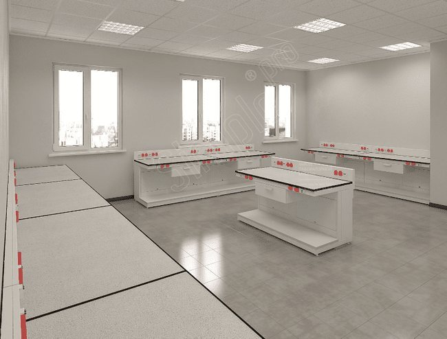
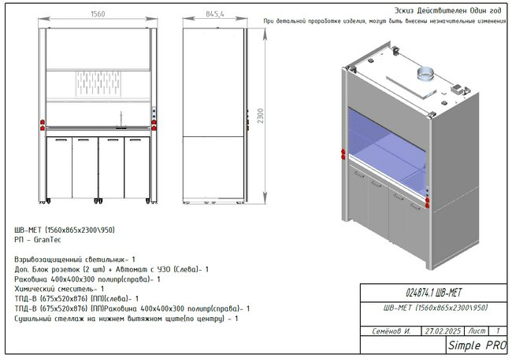
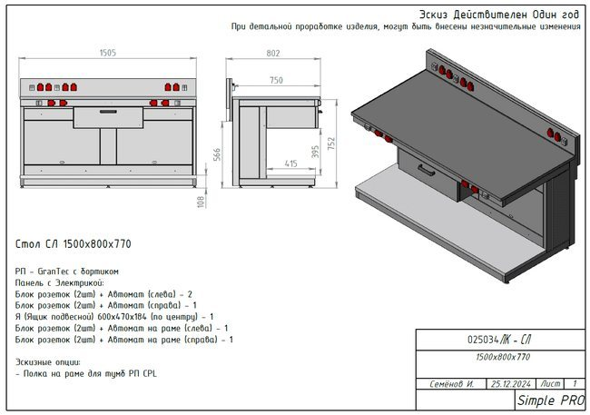
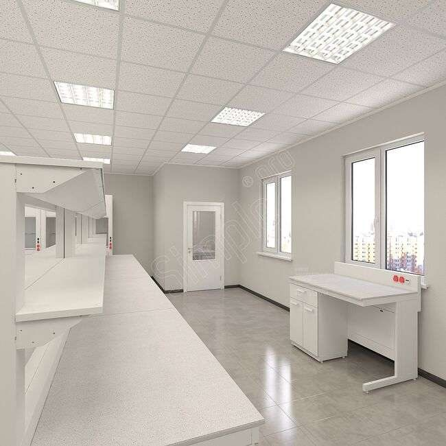

Simple PRO · Кейс · B2B
Кейс производителя лабораторной мебели: учебные классы «Газпромнефть-Терминала»
Задача
Показать, как мебель для учебных классов нефтяной компании подготовили к работе с нефтепродуктами.
Сделала
Переписала кейс заново по ТЗ и эскизам: разобрала доработки шкафа и столов с размерами и комплектацией, объяснила, почему розетки вынесли из рабочей камеры, убрала канцелярит и сочинённые цитаты.
Итог
Кейс, где громкое имя подкреплено инженерными деталями и решением по безопасности.
Лабораторная мебель для учебных классов «Газпромнефть-Терминала»
ООО «Газпромнефть-Терминал» входит в группу «Газпром нефть» и отвечает за хранение и отпуск нефтепродуктов. В активе компании собственная сеть нефтебаз, аккредитованные стационарные и передвижные лаборатории качества топлива, а также парк бензовозов в 12 регионах России. От точности анализов зависит каждая отгрузка, и предприятию нужны специалисты, знающие методики на практике.
Для их подготовки компания решила создать учебные классы химии, биологии и физики. Строительство и оснащение помещений вела подрядная организация, она же выбирала поставщика мебели. Её представитель позвонил в Simple PRO и объяснил выбор просто: продукция понравилась по фотографиям и визуализациям, а внешний вид убедил и в качестве изготовления. Для обеих сторон это был первый совместный проект.
Особенности учебной лаборатории
Теорию и практику в классах разделяет планировка. В учебной зоне стоят стандартные парты перед доской. Для лабораторных работ отведены островные столы и вытяжные шкафы, за которыми слушатели повторяют операции производственного контроля.
Анализ нефтепродуктов связан с летучими и горючими веществами, растворителями, нагревом проб и большим количеством приборов. Мебель для такого класса должна обеспечивать:
химическую стойкость рабочих поверхностей;
защиту от случайных проливов;
удобное питание для нескольких приборов сразу;
надёжное удаление паров из рабочей зоны.
Эти требования одинаковы для учебного класса и для действующей лаборатории. Слушатели с первых занятий привыкают к правильно организованному рабочему месту, и на производстве им не приходится переучиваться.
Как готовили проект
Подрядчик передал Simple PRO планы помещений с размерами и примерный перечень мебели. Дальше проект обсуждали в несколько этапов, и к работе постепенно подключились все его участники:
Встреча с представителем подрядчика и химиком заказчика, на которой обсудили концепцию лабораторной мебели.
Поездка этого специалиста на производство Simple PRO, где он осмотрел серийные изделия и сформулировал пожелания.
Отдельный приезд представителя подрядчика на завод для согласования деталей проекта.
Совместная работа с дизайнером заказчика над планировкой и внешним видом классов.
Подготовка 3D-визуализации, по которой участники проекта оценили расстановку до начала производства.

Среди пожеланий химика было и нестандартное: замкнуть через два крана вытяжного шкафа контур хладагента с постоянной циркуляцией. Для Simple PRO такая задача оказалась непривычной, и её обсуждали отдельно от основного списка доработок.
Задачи заказчика и решения Simple PRO
Основные пожелания касались вытяжных шкафов и лабораторных столов. Все изделия собраны на базе серийного конструктива, а доработки внесены на этапе эскизов.
Вытяжной шкаф увеличенной глубины
Заказчику требовалось разместить крупногабаритное оборудование в рабочей камере и сушить там же посуду. Конструкторы увеличили глубину корпуса: шкаф ШВ-МЕТ получил размеры 1560 × 865 × 2300 мм. На нижнем вытяжном щите по центру установлен сушильный стеллаж.

Рабочую камеру дополнили полипропиленовой раковиной 400 × 400 × 300 мм и химическим смесителем. Нижнюю часть занимают две тумбы из полипропилена, одна из них стоит под мойкой. Камеру освещает взрывозащищённый светильник, так что лампа не может стать причиной воспламенения паров нефтепродуктов.
Столы с розетками на панели и полкой для приборов
На практических занятиях одновременно включают несколько единиц оборудования, а удлинители на рабочей поверхности мешают и опасны рядом с реактивами. Для лабораторной зоны спроектировали столы размером 1500 × 800 × 770 мм в такой комплектации:
Электрическая панель. На надстройке установлены три сдвоенных блока, каждый со своим автоматом.
Розетки под столешницей. Ещё пара таких модулей закреплена на раме, к ним подключают оборудование, стоящее внизу.
Нижняя полка. Она принимает тяжёлые приборы и освобождает рабочую плоскость.
Подвесной ящик. Выдвижной модуль 600 × 470 × 184 мм держит мелкие принадлежности под рукой.

Розетки вынесены туда, где их видно и до них легко дотянуться, а провода не пересекают зону, где работают с химикатами.
Бортики на рабочих поверхностях
Слушатели только осваивают лабораторную технику, и пролив реактива на занятии вполне вероятен. Столешницы из материала GranTec изготовили с бортиком. Он задерживает разлитую жидкость и не даёт ей стечь на пол.
Почему розетки не стали ставить внутрь шкафа
Изначально заказчик хотел, чтобы точки питания находились прямо в рабочей камере и приборы подключались без лишних проводов снаружи. Инженеры Simple PRO от такого решения отказались и объяснили причину.
В камере вытяжного шкафа скапливаются пары реагентов и нефтепродуктов. Искра в контактах розетки при включении прибора способна их воспламенить, поэтому электрические точки размещают за пределами рабочего пространства.
Взамен дополнительный двойной блок с автоматом и устройством защитного отключения вынесли на переднюю панель шкафа слева. Приборы внутри камеры получают питание, а контакты остаются вне зоны с парами. Заказчик согласился с доводами, и проект пошёл в производство с этой схемой.
Сроки и результат
Договор заключили в феврале 2025 года, а в апреле работы были завершены. За два месяца мебель изготовили на собственном заводе Simple PRO, доставили и установили в классах.
В итоге учебная лаборатория получила оснащение, приближенное к производственному:
В глубоких вытяжных шкафах помещаются крупные приборы, а посуда сохнет на стеллаже под вытяжкой.
Столы дают питание всему оборудованию без удлинителей.
Бортики удерживают проливы на рабочей поверхности.
Розетки и освещение не создают риска воспламенения паров.

Через год «Газпромнефть-Терминал» снова обратился в Simple PRO, чтобы дооснастить оставшиеся помещения после ремонта. Повторный заказ стал лучшей оценкой первого этапа.
Оснащение лаборатории под ваши задачи
Проект начинается с плана помещения: по нему дизайнеры Simple PRO бесплатно готовят 3D-визуализацию с расстановкой мебели и точками подключения коммуникаций. Вытяжные шкафы, лабораторные столы и мойки можно выбрать в каталоге или заказать с доработками под методики вашей лаборатории. Для консультации и расчёта стоимости позвоните по номеру 8 (800) 222-32-97 или напишите на info@simple-pro.com.